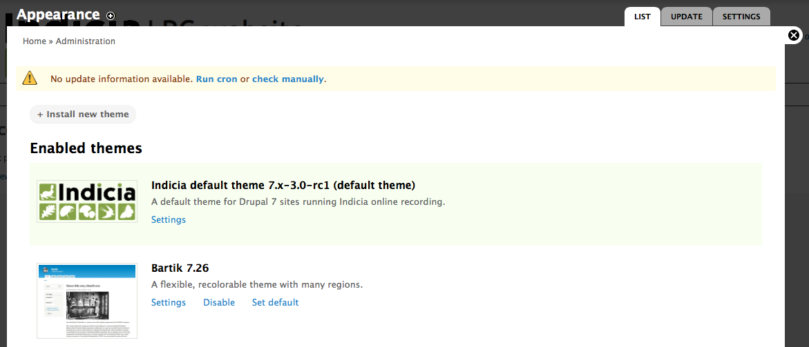
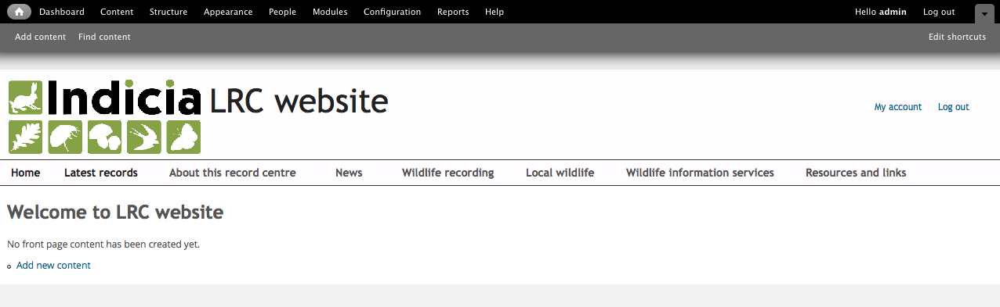
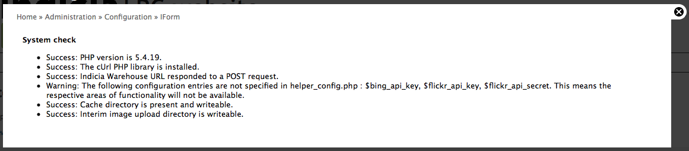

Although everything is now installed and in place, there are a few more configuration steps required to get your site up and running.
Since the site has been restored from a different environment, Drupal might attempt to save temporary files into the wrong location. To fix this:
The LRC Drupal Template is provided with a custom theme which defines the appearance of the entire site. This theme is highly configurable, so you can change everything from the banner to the fonts to the colour schemes. Although we’ll learn about configuring the theme later, an important step in the installation process is to let the theme write out it’s stylesheet and other files according to the current configuration settings. Don’t worry too much about the details of this yet, just follow these steps:

Scroll all the way to the bottom of the page then click Save Configuration. This lets all the settings you can configure on this page be compiled into stylesheets and other site template files.
Click the home icon in the top left corner of the page to check that your site is displaying OK.
Drupal allows the URL your pages are accessed via to be made more readable. For example, the URL http://www.example.com/?q=my-page can be rewritten as http://www.example.com/my-page, making the URLs easier to remember. This setting requires a compatible configuration of the web server and may not be possible on all servers. To enable the setting, click the Configuration link in the admin toolbar, then click the Clean URLS link in the Search and metadata section. Your site will either detect that clean URLs are supported, in which case you can just click the Enable Clean URLs checkbox and click the Save configuration button, or if Drupal thinks that clean URLs are not supported then you will be presented with a Run the clean URL test button. Refer to the ``Drupal handbook <http://drupal.org/node/15365>``_ for more information in this case.
Cron allows Drupal to run background tasks such as search indexing. Refer to the Drupal documentation for information on how to set this up.
The LRC Drupal Template site, like all other Indicia powered websites, needs a website registration on the appropriate warehouse, in our case the BRC Community Warehouse. This provides a website ID and website password which your website will need in order to securely communicate with the warehouse’s web services. If you don’t already have these details, then please contact BRC. You can find further notes on this setup task on the Indicia documentation website.
Now, click on the Configuration link in the admin menu bar at the top of your Drupal site and click the Settings link in the IForm section, then fill in the following details:
Tip
If you shift drag on the map, you can quickly set the bounding box of an area to zoom into.
Save the settings page when you are done. Now, we want to check that the settings are OK. Click on the Configuration link in the admin toolbar at the top, scroll down and find the IForm Diagnostics link and click it. You will note a warning about a few possible API keys being missing – don’t worry as these are APIs which we are unlikely to use and where the key can be added to the configuration later if needs be. But, ensure that all the other checks this page outputs indicate success:
The most likely type of failure you might observe at this point is for either the cache directory or interim image upload directories to be not writable by the web server. If this happens then the two folders you need to ensure are writeable are:
If you are not sure how to make these folders writable then it may be best to ask the adminstrator of your server.
The LRC Drupal Template is provided with wildlife recording forms that capture ad-hoc sightings as well as lists of records. You must create a survey on the warehouse into which records will be stored.
Tip
On the warehouse, a survey means a set of observations with a common purpose and methodology. The survey defines the attributes that are available for recording, for example a bat survey might capture information about the roost, whereas a plant survey might capture a DAFOR abundance. In our case, we’ll start out with a casual survey for ad-hoc sightings, but will learn how to setup other surveys later.
As part of the initial setup required to get the LRC Drupal Template site up and running, you will need to ask someone with access to the warehouse database to clone the template survey for you. This can be done with the following database query:
TO DO
Once the survey exists on the warehouse, we need to link the survey to our recording forms. From your site’s home page, select Wildlife recording from the main menu, then select the Submit a sighting link. This will bring you to the submit a single sighting form, currently incorrectly configured as it needs to be pointed to your survey on the warehouse. Because you are logged in with admin rights, you can access the page’s Edit view from here so click on the Edit tab just below the page title. This shows a configuration form where you can change a huge number of settings about the online recording functionality of the current page. Scroll the page down a bit and in the Other IForm Parameters section, drop down the Survey control and choose your survey. There should only be one available as this will only show the surveys linked to your website registration. Scroll to the bottom and press the Save button when you are done.
Now, repeat these steps, this time for the Submit a list of sightings form.